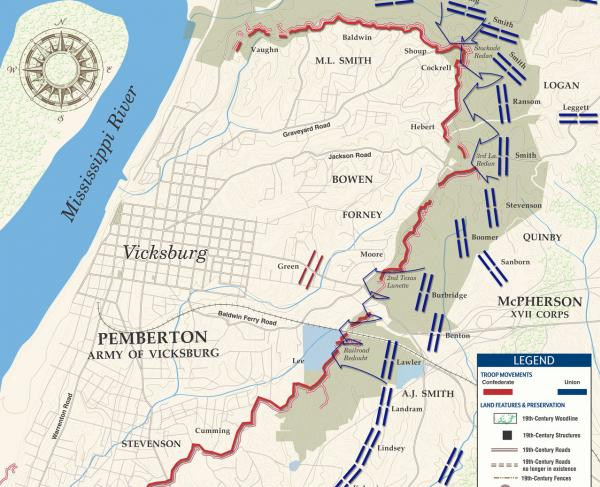

During the Spring and Summer of 1863, General Ulysses S. Grant, of the Union Army, surrounded and laid siege to the Confederate held city of Vicksburg, Mississippi during the American Civil War.
Knowing that Vicksburg was well defended, General Grant decided that the best way to capture this key city would be to deprive them of much needed food and resourses. He believed that this action would be the best way to perserve his army. So, on May 19, 1863 the seige began and would last for 6 long weeks.
The 6 week seige took it's toll on the city of Vicksburg, its citizens and the confederate army that was defending it. The lack of food and constant artillery bombardments was more than the city could take and on July 4th, 1863, the city and the confederate army holding it, surrendered.